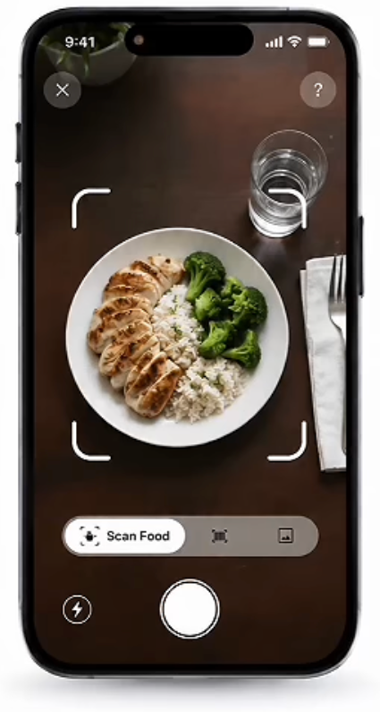

AI food scanner
Take a photo or pick one from your library. AI identifies each food and estimates its portion and nutrition.
Scan meals, track calories and build healthy habits with AI. Snap a photo and get calories, protein, carbs and fat in seconds.
Free to use. Sign in with Apple or Google.

Built around one thing: logging a meal should take a photo, not a spreadsheet.
Take a photo or pick one from your library. AI identifies each food and estimates its portion and nutrition.
Answer a few questions about your body, activity and goal, and get a calorie and macro plan made for you.
See calories left plus protein, carbs and fat for any day, with rings that fill up as you eat.
Log a meal every day to keep your streak going. Small habits add up.
From first launch to your first logged meal in a couple of minutes.
Sex, age, height, weight, activity level and goal. Metric or imperial.
Your daily calories, protein, carbs and fat, with a short explanation of why.
Scan what you eat and watch your day fill in on the home screen.
Estimates, not medical advice. Bulky AI’s calorie and macro values are AI-generated estimates meant to support everyday healthy habits. Talk to a doctor or registered dietitian about medical conditions or specific dietary needs.